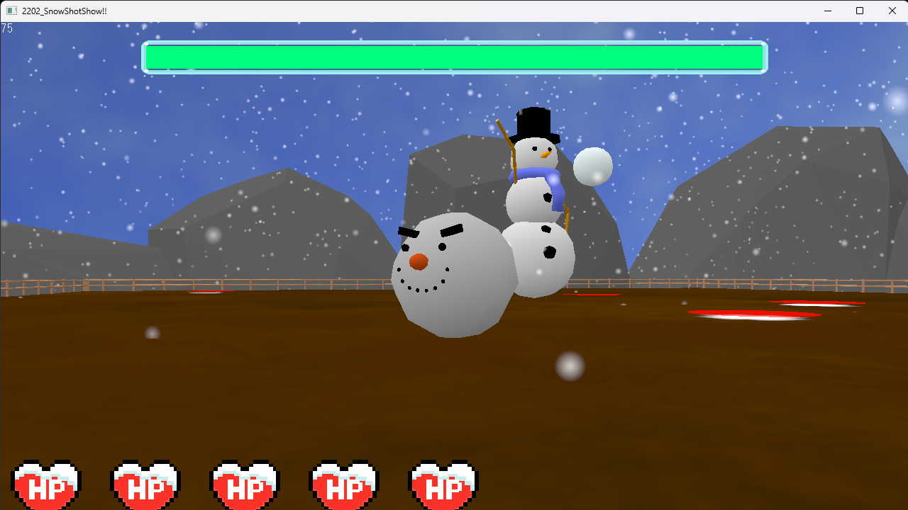
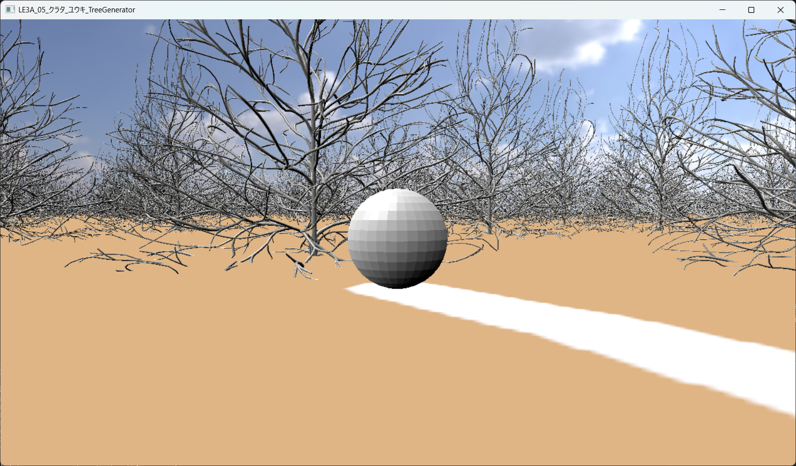
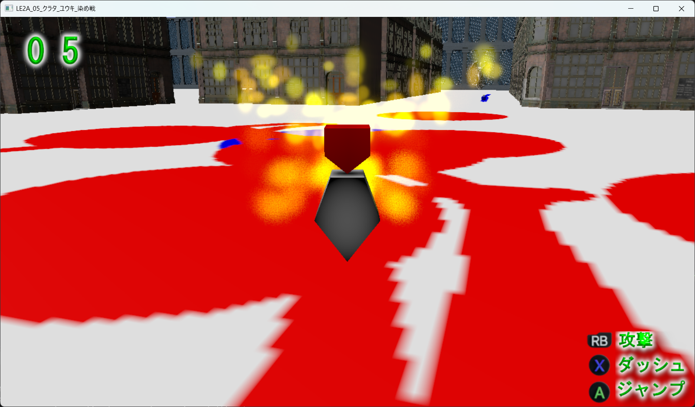
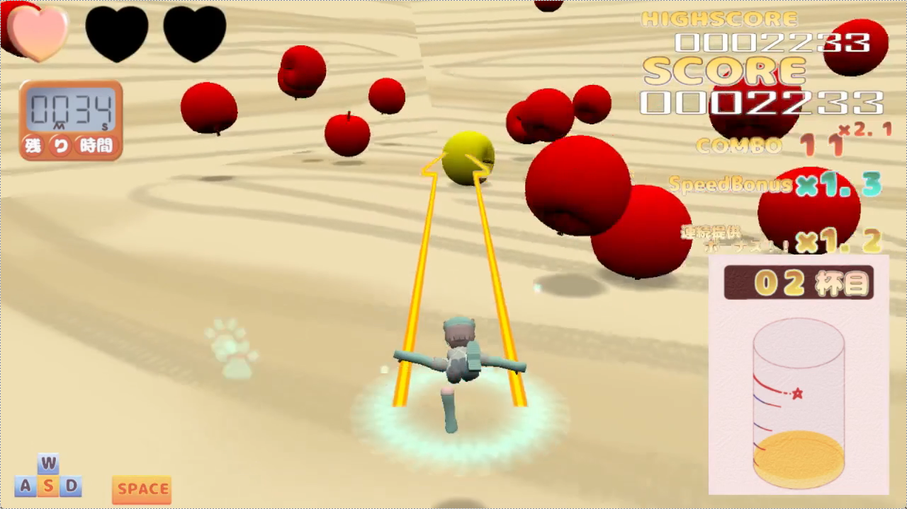
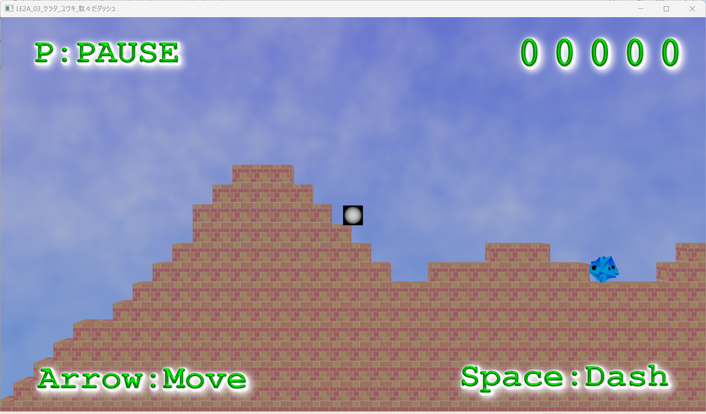

SnowShotShow!!
ComputeShaderを用いて当たり判定からUV座標を計算し、テクスチャの色を書き換えることで雪の足跡を表現しました。
C++Wonder Engineシェーダー・物理担当
01 / CAREER WORK
「巨大な森を生成したい」という目標に向け、
樹木生成とGPU描画の最適化に取り組んでいます。

TREE GENERATOR / GPU DRIVEN RENDERING
Space Colonization Algorithmで枝や葉の広がりを調整できる樹木生成を実装。さらに、多数の木を安定して描画するため、GPU上でカリングと間接描画を行う仕組みを開発しています。
02 / GAMES
これまでに制作したゲームを紹介します。

ComputeShaderを用いて当たり判定からUV座標を計算し、テクスチャの色を書き換えることで雪の足跡を表現しました。

HiZOcclusionCullingを用いてハイポリゴンの建物を描画し、快適なゲーム体験を目指しました。

物理挙動を用いてりんごの転がり方を制御し、当たり判定で坂やすり抜け対策に取り組みました。

PerlinNoiseを用いて自然な地形を生成し、リプレイバリューを高めました。
03 / ABOUT THE DEVELOPER
旅行・散歩